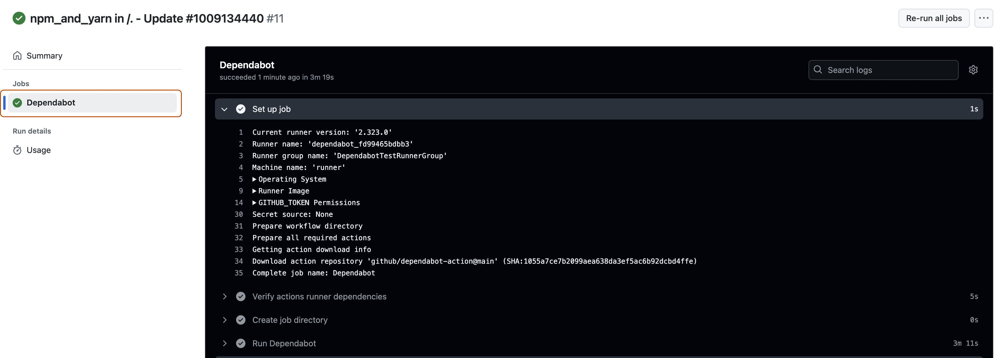
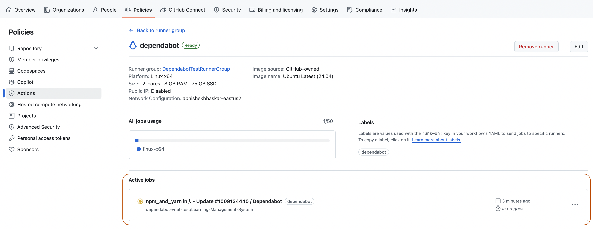

Setting up Dependabot to run on github-hosted action runners using the Azure Private Network
You can configure an Azure Virtual Network (VNET) to run Dependabot on GitHub-hosted runners.
Configuring VNET for Dependabot updates
This article provides step-by-step instructions for running Dependabot on GitHub-hosted runners configured with VNET. The article explains:
How to create runner groups for your enterprise or organization with a VNET configuration.
How to create GitHub-hosted runners for Dependabot in the runner group.
How to enable Dependabot on large runners.
How to configure Azure VNET firewall IP rules.
To use GitHub-hosted runners with Azure VNET, you first need to configure your Azure resources, then create a private network configuration in GitHub.
Configuring Azure resources
To learn how to use GitHub-hosted runners with an Azure private network, see Configuring your Azure resources in the GitHub Enterprise Cloud documentation.
Note
The databaseId which is required in the script for configuring the Azure resources can refer to any of the following depending on whether you are configuring the resources for an enterprise or an organization:
The enterprise slug, which you can identify by looking at the URL for your enterprise, https://github.com/enterprises/SLUG, or
The login for the organization account, which you can identify by looking at the URL for your organization, https://github.com/organizations/ORGANIZATION_LOGIN.
The script will return the full payload for the created resource. The GitHubId hash value returned in the payload for the created resource is the network settings resource ID you will use in the next steps while setting up a network configuration in GitHub
Configuring a VNET-injected runner for Dependabot updates in your enterprise
After configuring your Azure resources, you can use an Azure Virtual Network (VNET) for private networking by creating a network configuration at the organization level. Then, you can associate that network configuration to runner groups.
Create a runner group for the enterprise and select the organizations that you want to run Dependabot updates for. See Create a runner group for your enterprise in the GitHub Enterprise Cloud documentation.
Create and add a GitHub-hosted runner to the enterprise runner group. See Adding a larger runner to an enterprise in the GitHub Enterprise Cloud documentation. Important points are as follows:
The runner name must be dependabot
Choose a Linux x64 platform.
Select the suitable Ubuntu version.
When adding your GitHub-hosted runner to a runner group, select the runner group you created in the previous step.
Note
Naming the GitHub-hosted runner dependabot assigns the dependabot label to the runner, which enables it to pick up jobs triggered by Dependabot on actions.
In the upper-right corner of GitHub, click your profile picture, then click Organizations.
Under your organization name, click Settings. If you cannot see the "Settings" tab, select the dropdown menu, then click Settings.
In the "Security" section of the sidebar, select the Advanced Security dropdown menu, then click Global settings.
Under Dependabot, select Dependabot on self-hosted runners. This step is required, as it ensures that future Dependabot jobs will run on the larger GitHub-hosted runner that has the dependabot name.
Triggering a Dependabot run
Now that you've set up private networking with VNET, you can start a Dependabot run.
On GitHub, navigate to the main page of the repository.
Under your repository name, click the Insights tab.
In the left sidebar, click Dependency graph.
Under "Dependency graph", click Dependabot.
To the right of the name of manifest file you're interested in, click Recent update jobs.
If there are no recent update jobs for the manifest file, click Check for updates to re-run a Dependabot version updates'job and check for new updates to dependencies for that ecosystem.
Checking logs and active jobs for Dependabot updates
You can view the logs of the Dependabot workflow in the Actions tab of your repository. Ensure you select the Dependabot job on the left sidebar of the Actions page.

You can view the active jobs in the page containing informatuon about the runner. To access that page, click the Policies tab for the enterprise, select Actions on the left sidebar, click the Runner group tab, and select your runner.

Configuring Azure VNET firewall IP rules
If your Azure VNET environment is configured with a firewall with an IP allowlist, you may need to update your list of allowed IP addresses to use the GitHub-hosted runners IP addresses sourced from the meta API endpoint.
GitHub provides the following public endpoint for its IP ranges: